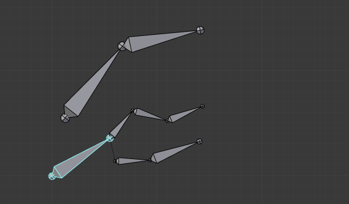
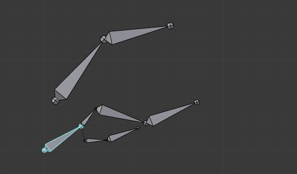

Relations¶
Reference
| Mode: | All Modes |
|---|---|
| Panel: |
In this panel you can arrange sets of bones in different layers for easier manipulation.
Bone Layers¶
Moving Bones between Layers¶
Obviously, you have to be in Edit Mode or Pose Mode to move bones between layers. Note that as with objects, bones can lay in several layers at once, just use the usual Shift-LMB clicks… First of all, you have to select the chosen bone(s)!
- In the Properties editor, use the “layer buttons” of each selected bone Relations panel (Bones tab) to control in which layer(s) it lays.
- In the 3D View editor, use the menu or or press M to show the usual pop-up layers menu. Note that this way, you assign the same layers to all selected bones.
Bone Group¶
Reference
| Mode: | Pose Mode |
|---|
To assign a selected bone to a given bone group use the Bone Group data ID.
Object Children¶
Reference
| Mode: | Pose Mode |
|---|
- Relative Parenting
- Changes how transformation of the bone is applied to its child Objects.
Parenting¶
- Parent
- A Data ID to select the bone to set as a parent.
- Connected
- The Connected checkbox set the head of the bone to be connected with its parent root.
Transformations¶
Bones relationships have effects on transformations behavior.
By default, children bones inherit:
- Their parent position, with their own offset of course.
- Their parent rotation (i.e. they keep a constant rotation relatively to their parent).
- Their parent scale, here again with their own offset.

The armature in its rest position. |

Rotation of a root bone. |

Scaling of a root bone. |
{kind=link}
Exactly like standard children objects. You can modify this behavior on a per-bone basis, using the Relations panel in the Bones tab:
- Inherit Rotation
- When disabled, this will “break” the rotation relationship to the bone’s parent. This means that the child will keep its rotation in the armature object space when its parent is rotated.
- Inherit Scale
- When disabled, this will “break” the scale relationship to the bone’s parent.
- Local Location
- When disabled, the location transform property is evaluated in the parent bone’s local space, rather than using the bone’s own rest pose local space orientation.
These inheriting behaviors propagate along the bones’ hierarchy. So when you scale down a bone, all its descendants are by default scaled down accordingly. However, if you disable one bone’s Inherit Scale or Inherit Rotation property in this “family”, this will break the scaling propagation, i.e. this bone and all its descendants will no longer be affected when you scale one of its ancestors.

The yellow outlined Inherit Rotation disabled bone in the armature. |

Rotation of a bone with an Inherit Rotation disabled bone among its descendants. |

Scaling of a bone with an Inherit Rotation disabled bone among its descendants. |
Connected bones have another specificity: they cannot be moved. Indeed, as their root must be at their parent’s tip, if you do not move the parent, you cannot move the child’s root, but only its tip, which leads to a child rotation. This is exactly what happens, when you press G with a connected bone selected, Blender automatically switches to rotation operation.
Bones relationships also have important consequences on how selections of multiple bones behave when transformed. There are many different situations which may not be included on this list, however, this should give a good idea of the problem:
Non-related selected bones are transformed independently, as usual.
When several bones of the same “family” are selected, only the “most parent” ones are really transformed – the descendants are just handled through the parent relationship process, as if they were not selected (see Fig. Scaling bones, some of them related. the third tip bone, outlined in yellow, was only scaled down through the parent relationship, exactly as the unselected ones, even though it is selected and active. Otherwise, it should have been twice smaller!)

Scaling bones, some of them related.
When connected and unconnected bones are selected, and you start a move operation, only the unconnected bones are affected.
When a child connected hinge bone is in the selection, and the “most parent” selected one is connected, when you press G, nothing happens, because Blender remains in move operation, which of course has no effect on a connected bone.
So, when posing a chain of bones, you should always edit its elements from the root bone to the tip bone. This process is known as forward kinematics (FK). We will see in a later page that Blender features another pose method, called inverse kinematics (IK), which allows you to pose a whole chain just by moving its tip.
Note
This feature is somewhat extended/completed by the pose library tool.